Visiones
Paisajes del desierto sonorense, cactus cargados de energía y recuerdos íntimos pintados al pastel.
«En verdad mi vida es surrealista, la gente que me conoce lo sabe.»
Ver su obra Maison d'André Breton
La obra de Martha Sáenz se expone en la Maison d'André Breton, en Saint-Cirq-Lapopie, Francia: la casa del fundador del surrealismo y epicentro histórico del movimiento. «Hoy esta obra está expuesta en la Maison d'André Breton», compartió la artista el 11 de julio de 2024.
En 2026 su obra forma parte de la exposición «Surréalisme & Mexique – Miroirs magnétiques», que conecta el surrealismo histórico con el actual. La muestra la organiza el Centre International du Surréalisme et de la Citoyenneté Mondiale, en colaboración con el Consejo Leonora Carrington de la Ciudad de México, y explora cómo México transformó al surrealismo: de André Breton a Leonora Carrington.
En octubre de 2026 Martha viajó a Saint-Cirq-Lapopie para el coloquio «Exquis» de la exposición, los días 17 y 18 de octubre, y visitó la Maison André Breton – La Rose Impossible.
«México es el país surrealista por excelencia.»
André Breton, 1938
Ver a una artista de Sonora exponer en la casa del fundador del surrealismo la coloca en la estirpe legendaria de Frida Kahlo, Remedios Varo y Leonora Carrington.
Ver la publicación en su Instagram →
Página oficial de la exposición 2026 →
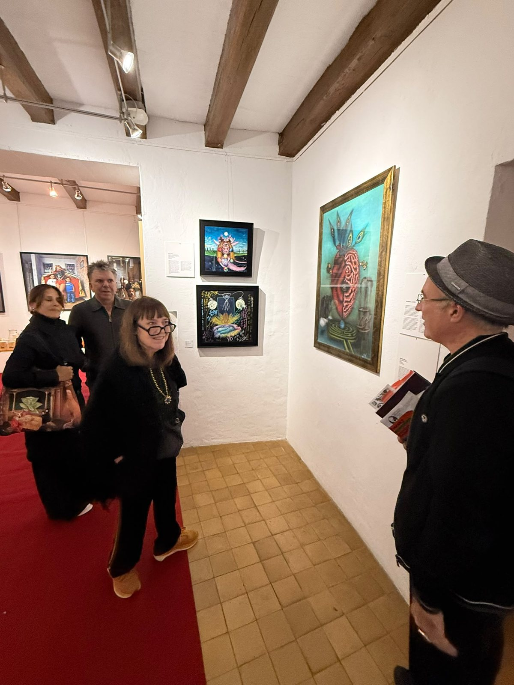
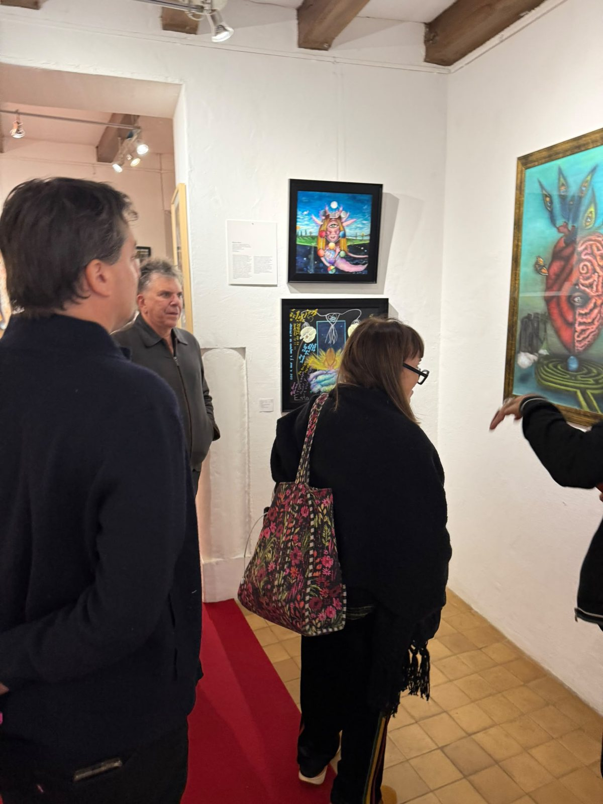
Las obras de Martha Sáenz en la sala de la exposición, entre ellas «Esta soy yo». Recibieron la visita de Federica Matta, artista e hija del pintor surrealista Roberto Matta, y de Fermín Llamazares, presidente del Consejo Leonora Carrington.
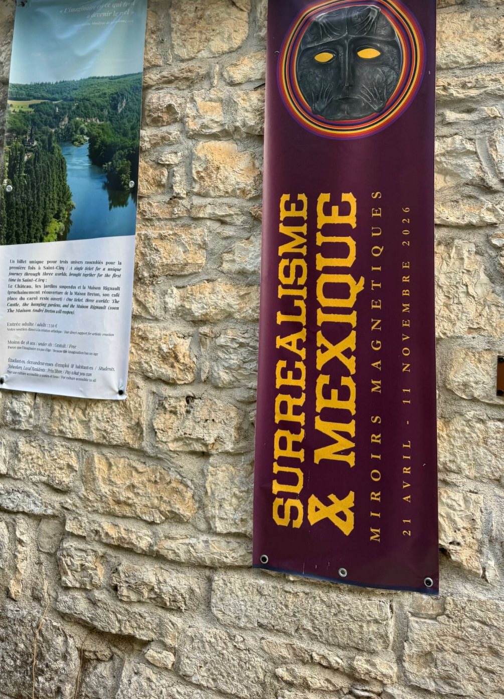
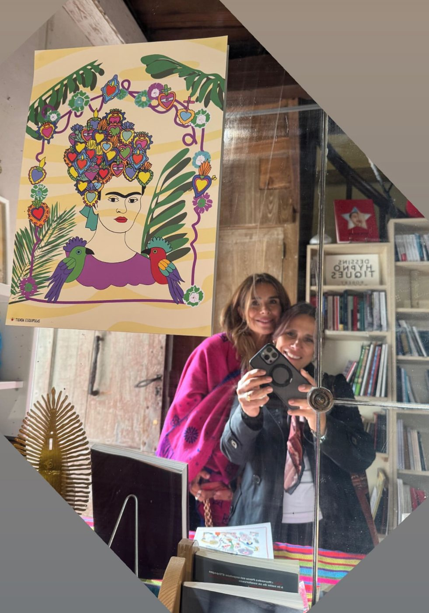
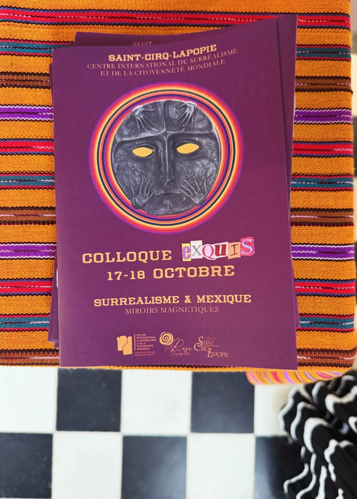
Martha Sáenz nació en Sonora, México, en 1975, y es originaria de Hermosillo. Descubrió la pintura de niña, mirando pintar a su madre; en gran parte autodidacta, tomó también clases con el artista Rubén Belloso. En la última década hizo de la pintura su profesión y, en sus propias palabras, su obsesión.
Su obra es autorreferencial: los paisajes desérticos de su tierra, los cactus que para ella son fuente de energía y los recuerdos de sus viajes, como el que hizo con sus hijos al desierto del Sahara, se convierten en símbolos y colores. Trabaja sobre todo con pastel y técnica mixta, y ha extendido su lenguaje a la escultura en bronce y al arte digital.
Fue en un taller en Sevilla, España, donde descubrió lo que quería desde niña: «¡Pude pintar lo que tenía en mi cabeza, desde ese momento no he dejado de hacerlo!». Hoy vive con su familia en Madrid. Entre sus obras más queridas está «Plenitud del alma», donde plasmó una experiencia que jamás pudo expresar con palabras.
La crítica la ha llamado «heredera del surrealismo», en la estela de Leonora Carrington, Remedios Varo, Giorgio de Chirico y Salvador Dalí.

En un encuentro de Scholas Occurrentes, la fundación educativa del Papa, Martha pinta junto al Papa Francisco una obra a cuatro manos.
Pinta un corazón con un ojo sobre el muro que divide México y Estados Unidos; meses después lo lleva al lienzo en Madrid.
Participa en exposiciones colectivas en las Naciones Unidas en Nueva York y en el Vaticano, y su obra está presente en galerías de Miami y Madrid.
Del 19 de agosto al 19 de septiembre en Casa Nuestra, antigua sede del Senado de la República: 18 obras al pastel en tres núcleos, «Mi mundo», «La mirada» y «Rostros de la memoria», con la curaduría de Raymundo Silva. Estaba prevista para marzo de 2020 y se pospuso por la pandemia.
La serie «Visiones» viaja a la Exposición Universal y se presenta en el Pabellón de Colombia.
Su obra NFT «Multiverse» se proyecta en las pantallas de Times Square en el marco de los NFT Awards.
Invitada especial en la exposición paralela al cierre de la Bienal «Il latte dei sogni», con las obras «Sin límites» y «Bendita coherencia».
Más de 20 obras de pastel, técnica mixta, sus primeras esculturas en bronce y piezas digitales, en el marco del 15.º aniversario del Centro de las Artes de San Luis Potosí.
23 obras de pintura, escultura y NFT en tres secciones, con axolotes, venados y xoloitzcuintles, la figura de la mujer mexicana y la vida familiar. La artista acompañó la muestra con talleres.
Una obra de Martha Sáenz se expone en la casa del fundador del surrealismo. «Hoy esta obra está expuesta en la Maison d'André Breton», compartió el 11 de julio de 2024.
Su integración al universo de André Breton, en la exposición del Centre International du Surréalisme, en colaboración con el Consejo Leonora Carrington. Del 21 de abril al 11 de noviembre de 2026. En octubre, Martha asiste en Saint-Cirq-Lapopie al coloquio «Exquis».
En marzo de 2019, en el Vaticano, Martha Sáenz conoció al Papa Francisco en un encuentro de Scholas Occurrentes, la fundación educativa creada por el Papa. Allí pintó junto a él una obra a cuatro manos: el Papa tomó el pincel de la paleta y el arte se convirtió en un puente de encuentro. Martha ha trabajado con la fundación del Papa y ha donado obras a subastas benéficas.
«Me gusta pensar que todos tenemos un lado filántropo que se preocupa por el mundo y, por eso, he donado algunas piezas a diferentes subastas, entre ellas he trabajado con la fundación del Papa Francisco, lo cual es un honor para mí.»Martha Sáenz · Revista Caras, octubre de 2021
«¡Qué honor!… ¡Gracias!» #pintandopuentes · «Recuerdo de un día increíble…» · #abrazosllenosdeamor — Martha, en Instagram
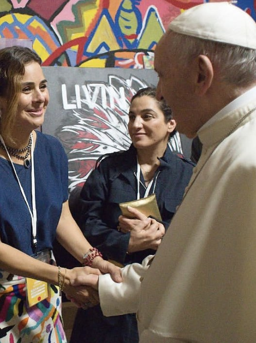
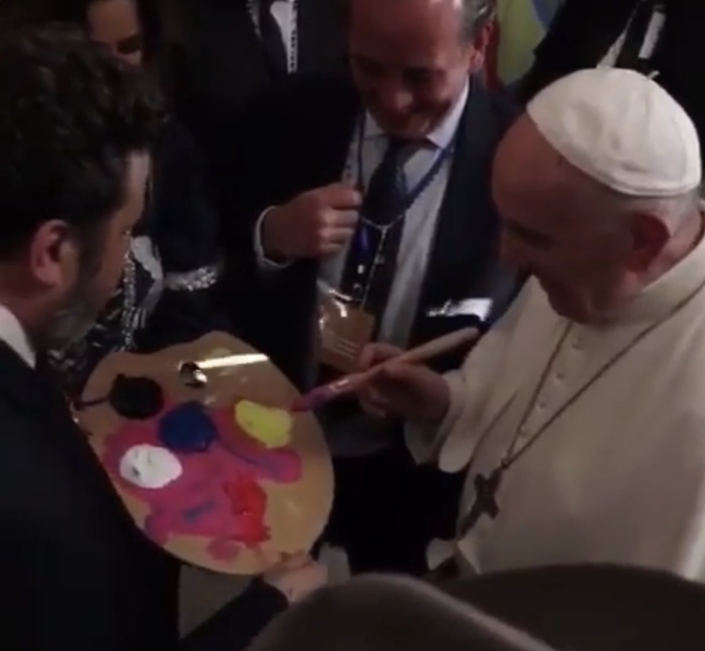
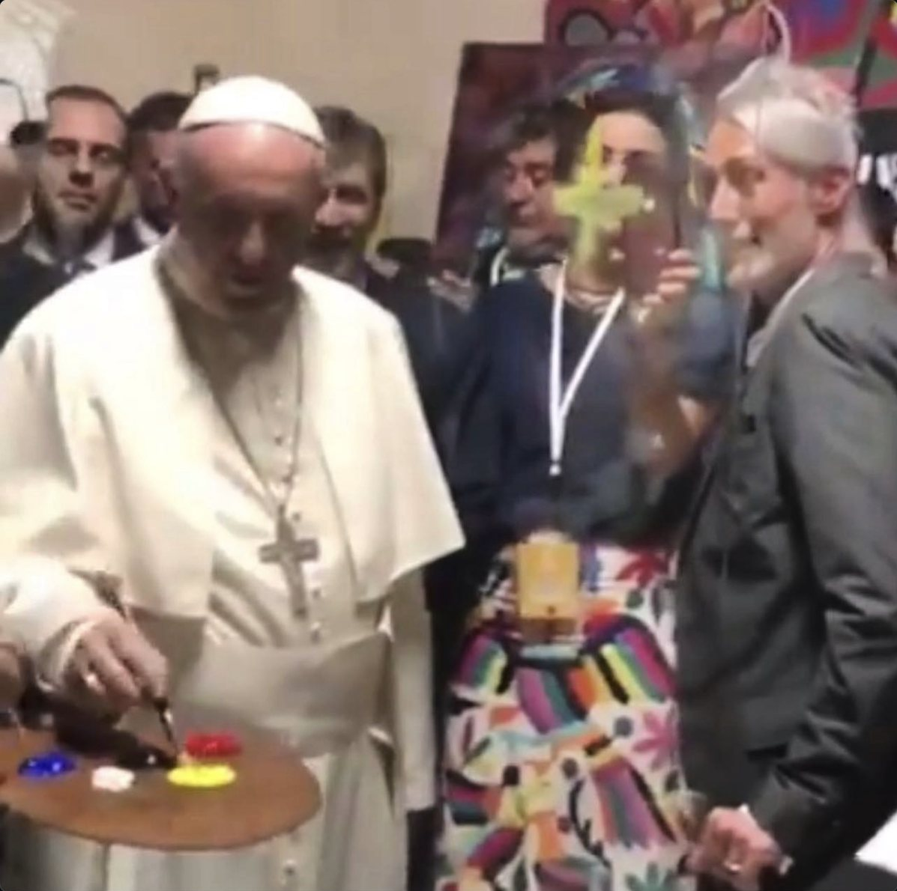
Paisajes del desierto sonorense, cactus cargados de energía y recuerdos íntimos pintados al pastel.
El poder del amor, el pensamiento, las emociones y el ego: «el poder infinito e ilimitado con el que fuimos creados».
Presentada en Venecia en el homenaje a Leonora Carrington al cierre de la 59.ª Bienal.
Un viaje espiritual con ajolotes, un sapo de Sonora y miles de estrellas, proyectado en el Nasdaq Billboard de Times Square durante los NFT Awards.
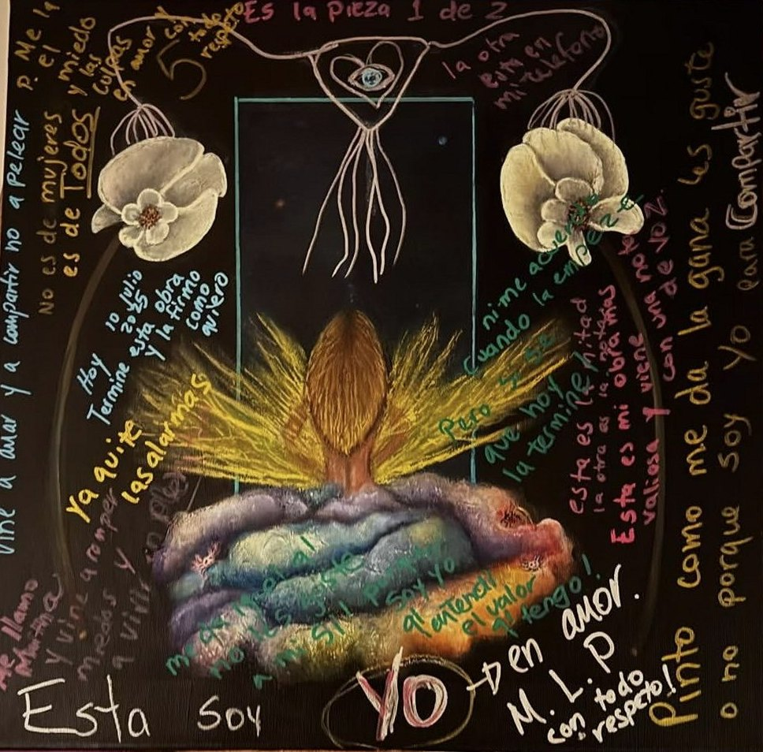


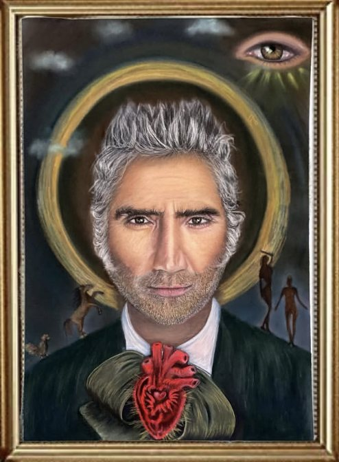
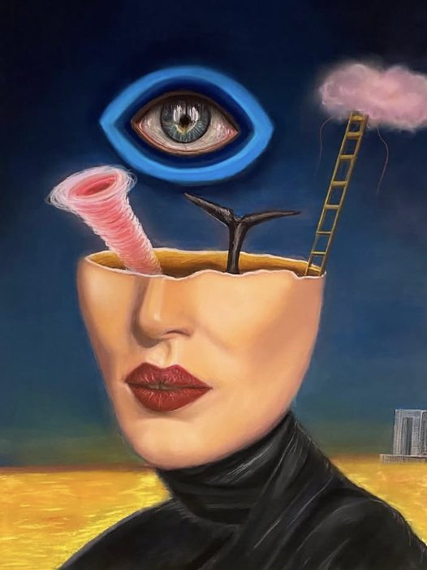
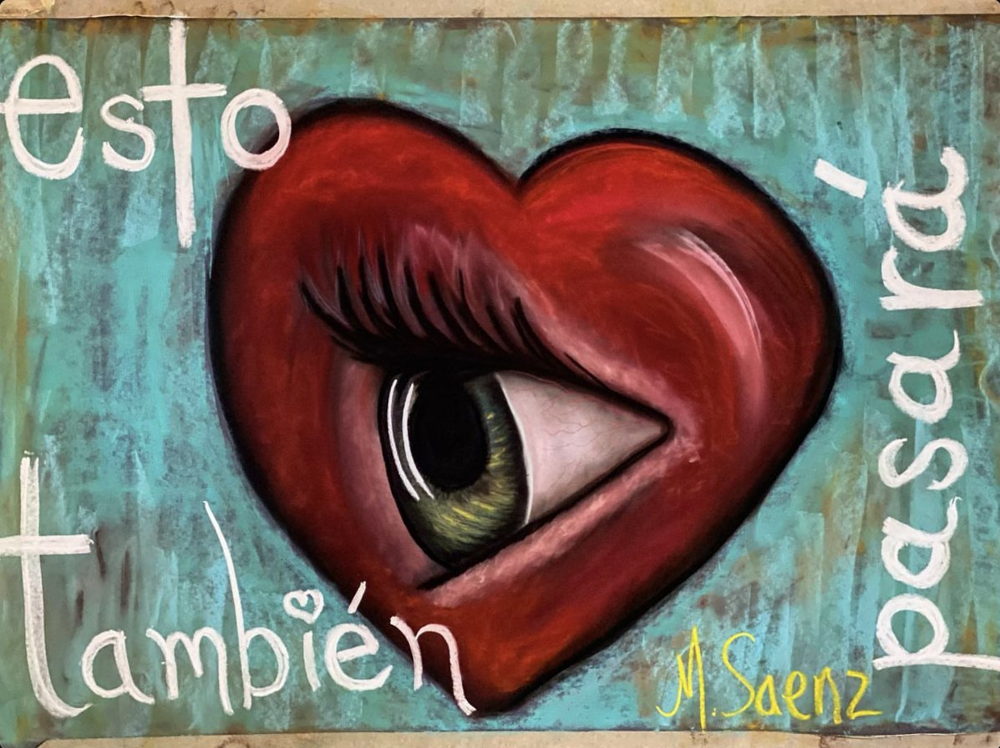
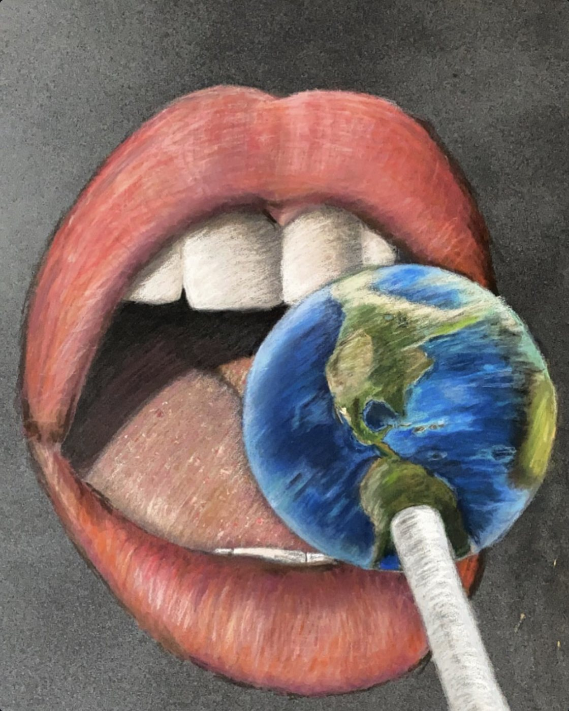
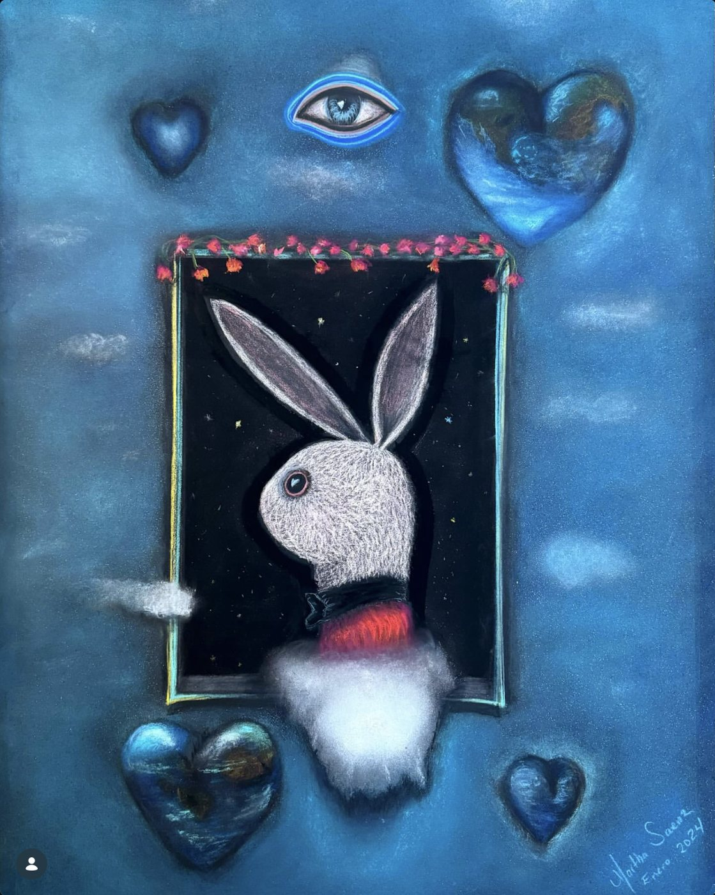


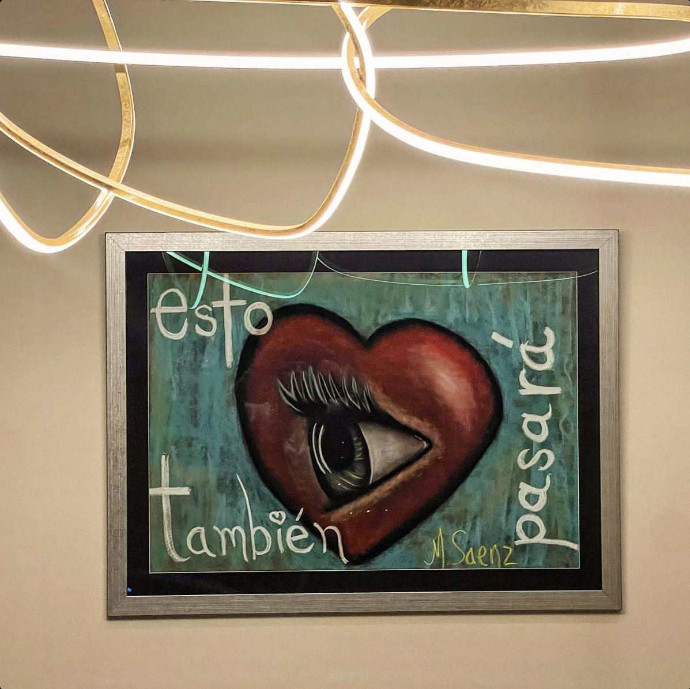
Martha la pintó primero en marzo de 2020 sobre el muro fronterizo que divide Tijuana y San Diego, y después la llevó a un lienzo en su casa de Madrid. En 2022 la obra viajó al Burj Khalifa, en Dubái.
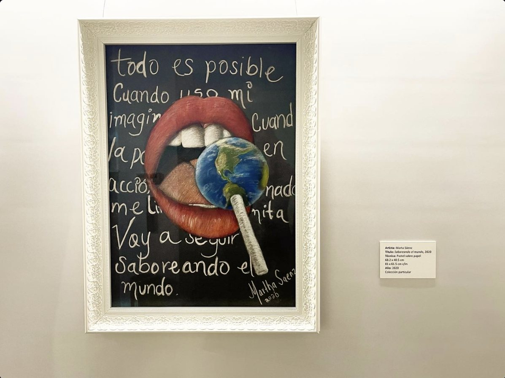
«Todo es posible cuando uso mi imaginación… Voy a seguir saboreando el mundo.» Una versión de la obra se expuso en el Pabellón de Colombia de la Expo Dubái en 2022.
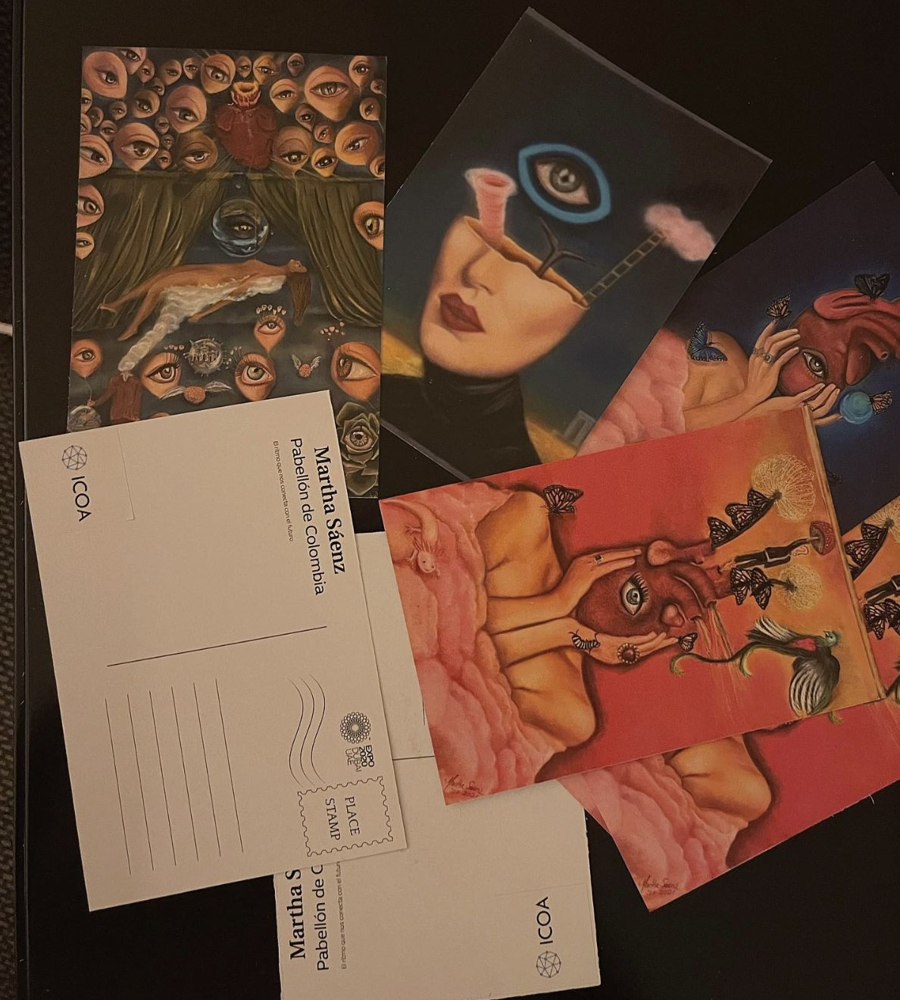
Postales con sus obras, editadas con su nombre para su exposición en el Pabellón de Colombia de la Expo 2020 Dubái.
«No juzguemos, mejor ayudemos.» Una obra de su serie de surrealismo con causa.
Una obra-diario: Martha escribió sobre el lienzo, a mano y en colores, lo que sentía mientras la pintaba. Es la pieza 1 de 2. En 2026 cuelga en la exposición «Surréalisme & Mexique», en Saint-Cirq-Lapopie, Francia.
«Hace meses empecé a pintar esta obra sin ganas, sin sentirme creativa, iba poniendo lo que iba…»Martha Sáenz · Instagram, 11 de julio de 2025


«El único límite lo ponemos nosotros.»
Martha Sáenz«Me desnudo totalmente el alma, pues la intención es mostrar quién soy yo por medio de mis pinturas.» Martha Sáenz
México siempre ha sido tierra predilecta del surrealismo: en 1938 Breton lo llamó «el país surrealista por excelencia». Ver a una artista contemporánea de Sonora exponer su obra en la Maison d'André Breton, epicentro histórico del movimiento, la sitúa en la estirpe de Frida Kahlo, Remedios Varo y Leonora Carrington.
Breton, Dalí y Éluard solían confinar a la mujer al papel pasivo de musa, modelo o inspiración. Martha Sáenz no es una figura fantaseada por la mente de un hombre, sino el sujeto activo y soberano de su propia creación: su arte es una herramienta de emancipación.
A diferencia del surrealismo del siglo pasado, arraigado en el psicoanálisis freudiano, su propuesta se enfoca en el amor propio, el autoconocimiento y la sanación. En series como «Sin límites» transforma traumas, miedos y ego en formas y colores para plasmar el poder infinito del alma humana.
Exponer en Francia junto al legado de Breton valida su papel como heredera moderna y lleva su estilo (elementos místicos, paisajes desérticos mexicanos y cactus cargados de energía) al rango de arte universal. El surrealismo, nacido con el manifiesto de 1924, sigue siendo una filosofía viva.
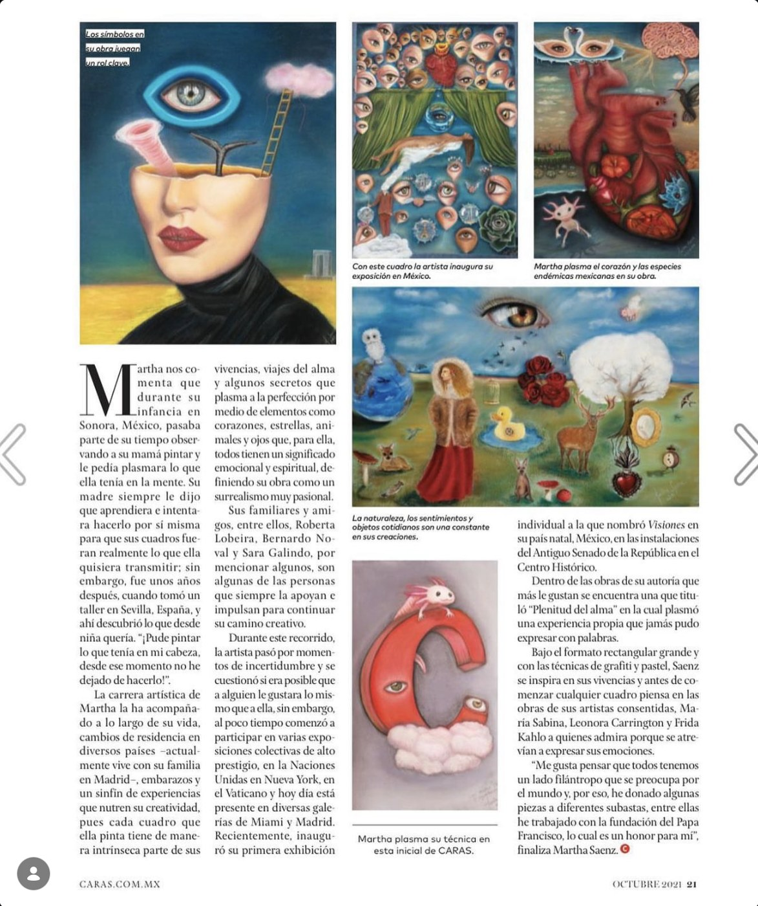
Su infancia en Sonora observando pintar a su madre, el taller en Sevilla, su vida en Madrid y sus exposiciones en las Naciones Unidas, el Vaticano, Miami y Madrid.